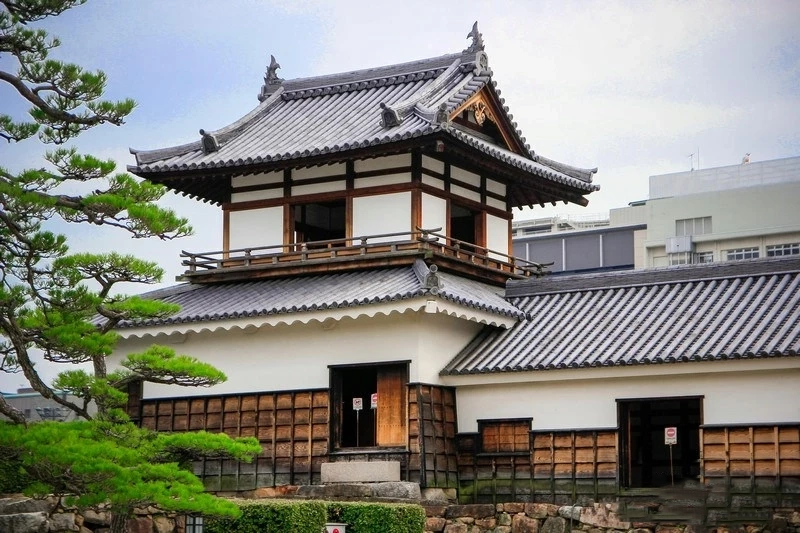
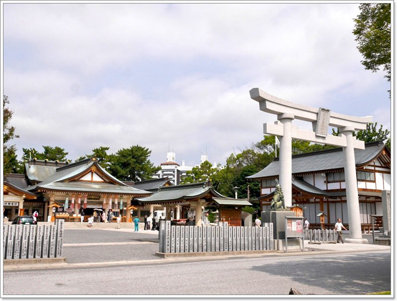
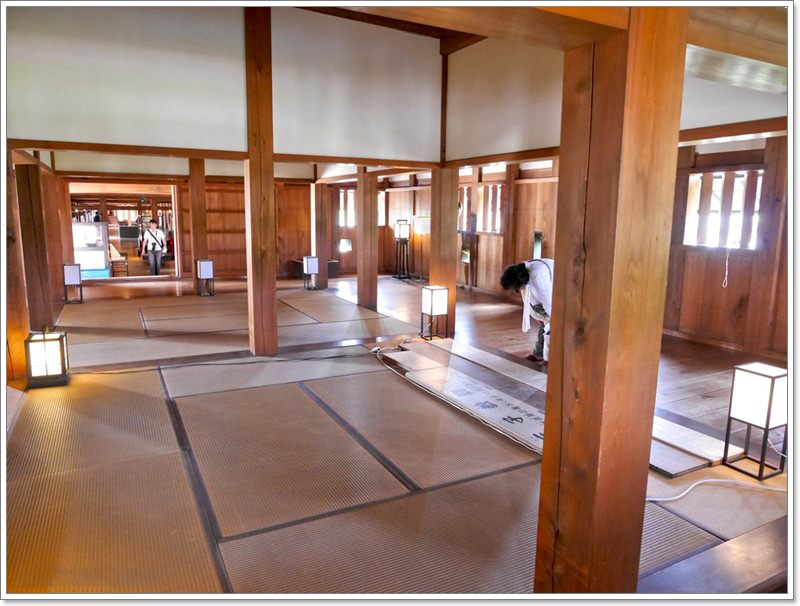

廣島城歷史
「廣島城」位於廣島縣西部的廣島市，是日本100名城之一，這座城是平城（築於平原地帶的城堡），由毛利輝元建於1589年，毛利輝元是豐臣秀吉為運營政權而設立的「豐臣政權五大老」中的一人。 廣島城最大的看點是天守閣。 原本的建築在原子彈爆炸中遭到摧毀，現在的天守閣是於1958年重建完成的。

廣島城介紹
廣島城（又稱鯉城）位於和平紀念公園的東北建於1589年，為豐臣秀吉的諸侯之一毛利輝元築見而成的，是一座典型的平城（平地上的城堡），並於1591年完成後進住，後續1960年關原之戰，毛利輝元遷移至山口縣後，廣島城主改為來自清洲（愛知縣）的福島正則，但是不久後城主又改為淺野長晟，他統治除了福山市一帶之外的現廣島縣地區，至明治維新之前的250年間都市為淺野家前後12世代繼承廣島城主。1871年廢除籓制度後，廣島城逐漸改為軍隊設施，甲午中日戰爭發生時，明治天皇的大本營就設在城堡中心的內城，所以這裡一度取代東京首都的功能，後續天守閣以及城內建築物，因為原子彈的爆炸氣浪而倒塌，目前的天守閣是於1958年重建而成的，其他的大門「表御門」、「大御門橋」、「太鼓櫓」、「多聞櫓」及「平櫓」另外於1994年復原。
廣島城資訊
地址：廣島縣廣島市中區基町21-1交通：・在JR廣島站撘往「宮島口」的路面電車2號線、往「廣島港」的1號線或是往「江波」的 6號線在「紙屋町東電停」下車，徒歩約15分鍾即可抵達。
開放時間：
3月~11月 09:00~18:00
12月~2月 09:00~17:00
門票：全票370円
城內神社
廣島城內有一座廣島護國神社， 裡面祭祀從古至今因戰爭去世的戰士， 在原子彈爆炸時也同都被燒毀， 現在的建築是1956年由當地人士援助下重新建立， 每年新年時都會有許多廣島人來參拜。

城內介紹
「一旁還有還原過去生活的場景， 依實際尺寸製作的武士及商人屋舍， 接下來其他展覽內容就不開放攝影， 裡面展示廣島從古自今的歷史發展。二丸平櫓
除了天守閣，也別忘了去二丸平櫓， 經過重新復原的它是可以入內參觀的， 裡面還原以前城主的生活空間， 漫步於長廊中，彷彿穿越時光隧道。

地圖